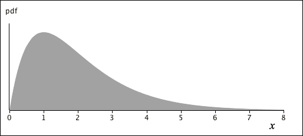
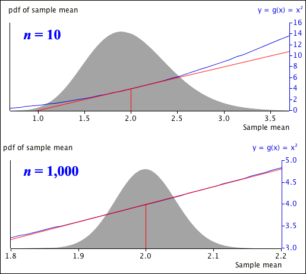

Distribution of \(Y = g(X)\)
If \(X\) has pdf \(f_X(x)\) and \(g(\cdot)\) is a monotonic function, then the transformed variable \(Y = g(X)\) has pdf
\[ f_Y(y) \;\;=\;\; f_X(h(y)) \times \left| h'(y) \right| \]where \(x = h(y)\) is the inverse function to \(g(x)\). Its mean and variance are however often difficult to find from this pdf.
Delta method
We now informally present a way to get approximate values for \(E[Y]\) and \(\Var(Y)\).
If \(X\) has mean \(\mu\) and variance \(\sigma^2\), a Taylor series approximation of \(g(X)\) around \(\mu\) is
\[ Y \;\;=\;\; g(X) \;\;\approx\;\; g(\mu) + (X - \mu) g'(\mu) \]We can find the mean and variance of the linear function of \(X\) on the right, giving the approximation,
\[ E[Y] \;\approx\; g(\mu) \spaced{and} \Var(Y) \;\approx\; \left(g'(\mu)\right)^2 \sigma^2 \]This is called the delta method.
The approximation relies on the transformation being nearly linear for the values of \(X\) that are likely to be observed. \(\Var(X)\) must therefore be small.
Application to estimators of parameters
If \((X = \hat{\theta})\) is a consistent estimator of a parameter, \(\theta\), then\(\Var(\hat{\theta}) \to 0\) as the sample size, \(n\), increases. The delta method therefore gives an approximate mean and variance for any continuous function of it, \(g(\hat{\theta})\), in large samples.
Quadratic transformation
We now consider a random variable, \(X\), that is assumed to arise from a family of distributions with mean \(\mu\) and variance \(\sigma^2\). For example, its distribution might be as shown below.

The mean of a random sample, \(\overline X\), might be used to estimate \(\mu\), so we now consider \(\overline X ^2\) as an estimator of \(\mu^2\). The delta method states that in large samples,
\[ E\Big[\overline{X}^2\Big] \approx \mu^2 \spaced{and} \Var\Big(\overline{X}^2\Big) \approx \left(g'(\mu)\right)^2 \frac{\sigma^2}{n} = (2\mu)^2 \frac{\sigma^2}{n} \]This approximation relies on the transformation being close to linear around the values of \(\overline{X}^2\) that are most likely to be observed.

When \(n = 10\), the sample mean is likely to be between 1.0 and 3.5, but the quadratic (blue) is far from linear (red) so the delta method will not give accurate values for \(E\Big[\overline{X}^2\Big]\) or \(\Var\Big(\overline{X}^2\Big)\).
However when \(n = 1,000\), the quadratic curve is almost linear within the range of likely x-values (1.9 to 2.1) so the delta method will work well.